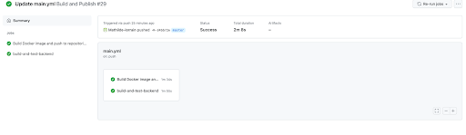

Discover Github Action
Check
Checkpoint: call us to check your results (don’t stay blocked on a checkpoint if we are busy, we can check ⅔ checkpoints at the same time)
Question
Point to document/report
Tip
Interesting information
Goals
Good Practice
Do not forget to document what you do along the steps.
Create an appropriate file structure, 1 folder per image.
Target Application
Complete pipeline workflow for testing and delivering your software application.
We are going to use different useful tools to build your application, test it automatically, and check the code quality at the same time.
Link
Setup GitHub Actions
The first tool we are going to use is GitHub Actions. GitHub Actions is an online service that allows you to build pipelines to test your application. Keep in mind that GitHub Actions is not the only one on the market to build integration pipelines.
Historically many companies were using Jenkins (and still a lot continue to do it), it is way less accessible than GitHub Actions but much more configurable. You will also hear about Gitlab CI and Bitbucket Pipelines during your work life.
First steps into the CI World
Note
Push your previous project on your personal GitHub repository.
Most of the CI services use a yaml file (except Jenkins that uses a… Groovy file…) to describe the expected steps to be done over the pipeline execution. Go on and create your first main.yml file into your project’s root directory.
Build and test your Application
For those who are not familiar with Maven and Java project structures, here is the command for building and running your tests:
You need to launch this command from your pom.xml directory, or specify the path to it with --file /path/to/pom.xml argument.
Note
What is it supposed to do?
This command will actually clear your previous builds inside your cache (otherwise your can have unexpected behavior because maven did not build again each part of your application), then it will freshly build each module inside your application, and finally it will run both Unit Tests and Integration Tests (sometime called Component Tests as well).
Note
Unit tests? Component tests?
Integration tests require a database to verify you correctly inserted or retrieved data from it. Fortunately for you, we’ve already taken care of this! But you still need to understand how it works under the hood. Take a look at your application file tree.
Let’s take a look at the pom.xml that is inside the simple-api, you will find some very helpful dependencies for your testing.
<dependencies>
<dependency>
<groupId>org.testcontainers</groupId>
<artifactId>testcontainers</artifactId>
<version>${testcontainers.version}</version>
<scope>test</scope>
</dependency>
<dependency>
<groupId>org.testcontainers</groupId>
<artifactId>jdbc</artifactId>
<version>${testcontainers.version}</version>
<scope>test</scope>
</dependency>
<dependency>
<groupId>org.testcontainers</groupId>
<artifactId>postgresql</artifactId>
<version>${testcontainers.version}</version>
<scope>test</scope>
</dependency>
</dependencies>
As you can see, there are a bunch of testcontainers dependencies inside the pom.
Question
2-1 What are testcontainers?
They simply are java libraries that allow you to run a bunch of docker containers while testing. Here we use the postgresql container to attach to our application while testing. If you run the command mvn clean verify you’ll be able to see the following:
As you can see, a docker container has been launched while your tests were running, pretty convenient, isn’t it?
Finally, you’ll see your test results.
Now, it is up to you! Create your first CI, asking to build and test your application every time someone commits and pushes code on the repository.
First you create a .github/workflows directory in your repository on GitHub.
Put your main.yml inside workflows.
The main.yml holds the architecture of your pipeline. Each job will represent a step of what you want to do. Each job will be run in parallel unless a link is specified.
Here is what your main.yml should look like:
name: CI devops 2023
on:
#to begin you want to launch this job in main and develop
push:
branches: #TODO
pull_request:
jobs:
test-backend:
runs-on: ubuntu-22.04
steps:
#checkout your github code using actions/checkout@v2.5.0
- uses: actions/checkout@v2.5.0
#do the same with another action (actions/setup-java@v3) that enable to setup jdk 17
- name: Set up JDK 17
#TODO
#finally build your app with the latest command
- name: Build and test with Maven
run: #TODO
It’s your turn, fill the #TODOs!
To see the result you must follow the next steps:
And if it’s GREEN you win!

Question
2-2 Document your Github Actions configurations.
First steps into the CD World
Here we are going to configure the Continuous Delivery of our project. Therefore, the main goal will be to create and save a docker image containing our application on the Docker Hub every time there is a commit on a main branch.
As you probably already noticed, you need to log in to docker hub to perform any publication. However, you don’t want to publish your credentials on a public repository (it is not even a good practise to do it on a private repository). Fortunately, GitHub allows you to create secured environment variables.
1- Add your docker hub credentials to the environment variables in GitHub Actions (and let them secured).
Note
Secured Variables, why?
Now that you added them, you can freely declare them and use them inside your GitHub Actions pipeline.
2- Build your docker images inside your GitHub Actions pipeline.
Maybe the template Build a docker image can help you!
# define job to build and publish docker image
build-and-push-docker-image:
needs: test-backend
# run only when code is compiling and tests are passing
runs-on: ubuntu-22.04
# steps to perform in job
steps:
- name: Checkout code
uses: actions/checkout@v2.5.0
- name: Build image and push backend
uses: docker/build-push-action@v3
with:
# relative path to the place where source code with Dockerfile is located
context: ./simple-api
# Note: tags has to be all lower-case
tags: ${{secrets.DOCKERHUB_USERNAME}}/tp-devops/simple-api
- name: Build image and push database
# DO the same for database
- name: Build image and push httpd
# DO the same for httpd
Note
Why did we put needs: build-and-test-backend on this job? Maybe try without this and you will see!
OK your images are built but not yet published on dockerhub.
3- Publish your docker images when there is a commit on the main branch.
Don’t forget to do a docker login and to put your credentials on secrets!
- name: Login to DockerHub
run: docker login -u ${{ secrets.DOCKERHUB_USERNAME }} -p ${{ secrets.DOCKERHUB_TOKEN }}
And after modify job Build image and push backend to add a push action:
- name: Build image and push backend
uses: docker/build-push-action@v3
with:
# relative path to the place where source code with Dockerfile is located
context: ./simple-api
# Note: tags has to be all lower-case
tags: ${{secrets.DOCKERHUB_USERNAME}}/tp-devops:simple-api
# build on feature branches, push only on main branch
push: ${{ github.ref == 'refs/heads/main' }}
Do the same for other containers.
Note
For what purpose do we need to push docker images?
Now you should be able to find your docker images on your docker repository.
Check
Working CI & Docker images pushed to your repository.
Setup Quality Gate
What is quality about?
Quality is here to make sure your code will be maintainable and determine every unsecured block. It helps you produce better and tested features, and it will also prevent having dirty code pushed inside your main branch.
For this purpose, we are going to use SonarCloud, a cloud solution that makes analysis and reports of your code. This is a useful tool that everyone should use in order to learn java best practices.
Register to SonarCloud
Create your free-tier account on SonarCloud.
SonarCloud will propose you to set up your GitHub Actions pipeline from the GitHub Actions, but forget about that, there is a much better way to save the SonarCloud provided and provide it into your main.yml.
1- You must create an organization.
2- And keep the project key and the organization key you will need it later.
3- You need to add this script to your main.yml for launch sonar at each commit.
Set up your pipeline to use SonarCloud analysis while testing.
For that, you need to modify your first step named Build and test with Maven and change sonar organization and project key.
mvn -B verify sonar:sonar -Dsonar.projectKey=devops-2023 -Dsonar.organization=devops-school -Dsonar.host.url=https://sonarcloud.io -Dsonar.login=${{ secrets.SONAR_TOKEN }} --file ./simple-api/pom.xml
If you did your configuration correctly, you should be able to see the SonarCloud analysis report online:
Check
Working quality gate.
Question
Document your quality gate configuration.
Well done buddies, you’ve created your very first Quality Gate! Yay!
Bonus: split pipelines (Optional)
In this step you have to separate your jobs into different workflows so that they respect 2 things:
- test-backend must be launched on develop and master branch and build-and-push-docker-image on master only.
- The job that pushes the docker api image must be launched only if test-backend is passed.
Tip
You can use on: workflow_run to trigger a workflow when another workflow is passed.
© Takima 2023